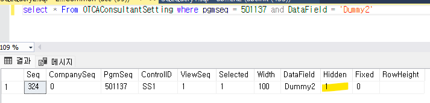
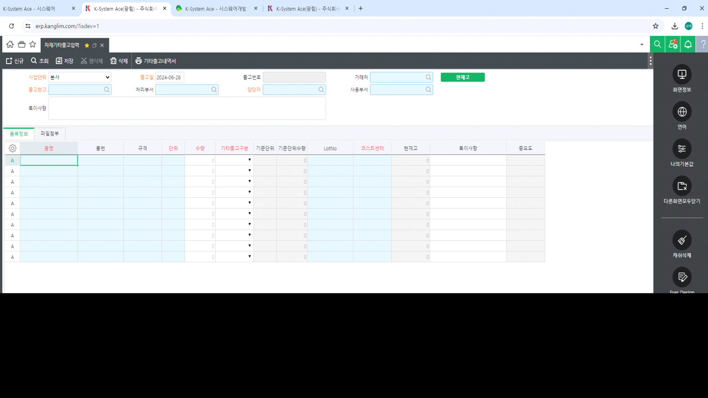

시트 설정 관리 - 기존 시트설정 삭제
프로그램 항목 속성에서 DIS 설정한 컬럼 값이 HID 되어 나오는 현상
=> '컨설턴트 시트 설정'이 되어있음

- 개발자 모드 로그인 (?isdev=1)
- 설정하려는 화면 우측 상단 클릭

- 시트 설정 관리 - 기존 시트설정 삭제
+. 추가적으로, 화면의 Ever Design 기능을 통해 해당 컨트롤에 설정된 값들을 확인할 수 있습니다.
지금 같은 경우, 시트 설정으로 인해 HID/DIS가 모두 체크된 상태인 것을 볼 수 있습니다.